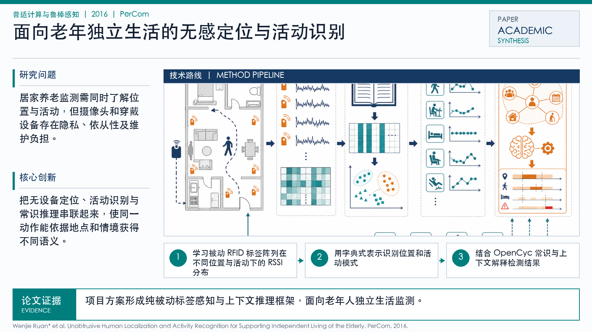

Problem
解决的问题
居家养老监测需同时了解位置与活动，但摄像头和穿戴设备存在隐私、依从性及维护负担。
Pervasive Computing and Robust Sensing · 2016 · PerCom
Unobtrusive Human Localization and Activity Recognition for Supporting Independent Living of the Elderly
Problem
居家养老监测需同时了解位置与活动，但摄像头和穿戴设备存在隐私、依从性及维护负担。
Value
项目方案形成纯被动标签感知与上下文推理框架，面向老年人独立生活监测。
Paper-grounded Academic Summary
该代表页依据原文摘要、贡献段与方法图注生成。方法视觉由 ImageGen 按论文证据逐篇绘制，中文研究问题、技术路线、创新点与实验结论采用确定性排版，以保证内容与字符准确。
打开原文 PDF
Technical Route
Innovation